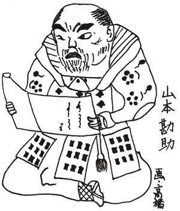
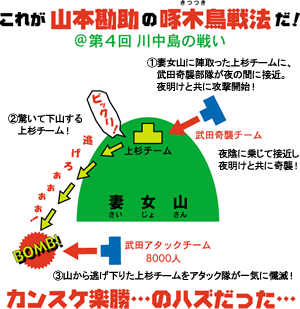
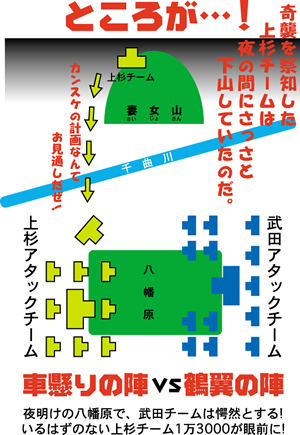

カンスケの出生地は愛知だとか静岡だとか言われているが、ここでは我が久保田利伸の故郷近く、駿河国富士郡山本＝静岡県富士宮市山本とする。富士宮市は、久保田のお父さんがパチンコに通っていた町だ。デビュー間もない久保田利伸の歌がパチンコ屋に流れると、久保田パパは銀玉をはじきながら「おっ!やっぱり久保田利伸の歌はいいなぁ〜!」と、自分の息子をフルネームで大発声していた思い出の地だ。はからずも、カンスケと久保田利伸は浅からぬ縁があると言えるのだ。
カンスケが生まれたのは1500年頃で、成人したカンスケは武者修行の全国行脚に出る。その間に、なんだかとっても悲惨な目に遭ったらしい。色黒のブ男なのは生まれつきとしても、カンスケは片方の目が見えず、足も悪く、全身傷だらけで、なんと、手の指も欠落していたという。こんなルックス最悪の男が、静岡県のボス・今川義元(イマガワ・ヨシモト)に「雇ってください」と言っても、そりゃ無理だっつーの。「そんなこと言わないでよ。ボク、色んな兵法を知ってるから、ボスのお役に立ちますよ!」と言えば言うほど、カンスケはウソつきにされちゃったのであります。ところが、捨てる神あれば拾う神あり…甲斐国＝山梨県の若きボス・武田晴信(タケダ・ハルノブ)＝のちの武田信玄(シンゲン)はカンスケの実力を聞きつけ、年俸100貫で雇用契約をオファーするのだ。もちろん無職のカンスケは即ＯＫ!早速ハルノブと会い、兵法の話かなんかをしているうちに盛り上がり、なななんと、ハルノブはカンスケに「１００貫じゃなくて２００貫あげちゃう!」と言ったのだった。結果、カンスケは２００貫＝現在の賃金にして約6000万円もの年俸でハルノブの軍事スタッフになったのである。破格の待遇を受けたカンスケは周囲の陰口にもメゲず、ハルノブが信濃国＝長野県を攻めた時に9つもの城を落とすという大ホームランを放ち、軍師はルックスよりも実力だということを見せつけた。
そしてここから、物語は面白くなる。
攻め落とした長野のボス・諏訪頼重(スワ・ヨリシゲ)には、それはそれは美しいお姫様がいた。その姫に、ボスのハルノブがフォーリン・ラブ!しか〜し!時は戦国時代。どんなに美しくても、敵の姫にフォーリン・ラブなど許されない。スタッフみんなが反対コール。そんな中ただ1人、カンスケだけが賛成コールしたのだ。
カンスケは考えたのだ。姫がハルノブのベイビーを産めば、敵の諏訪一族は武田ファミリーになるだろう…。カンスケの思惑は的中し、姫は武田家最後の当主となる勝頼(カツヨリ)を産むのである。ただね、カンスケも姫を好きだったんだと思うよ。多分、かなりの確率で惚れてたね。でもカンスケはブ男だから、アイ・ラブ・ユーなんて言えない。それでも側にいたいから、姫をハルノブの側室にした…。希代のブ男軍師・カンスケは、希代の策士でもあったのだ。
突然ですが、ここで豆知識。
テストなどの正解が分からなくて、「ヤマカン」で回答することってあるよね。この「ヤマカン」の語源は、山本勘助＝ヤマカンと言われているのだ。広辞苑でヤマカンを引くと、「やまかん(山勘)」と出ていて、「山師のように計略にかけて人をごまかすこと。勘を働かせて山を掛けること」などと出ているのだ。これは、いつか行う「戦国検定試験」に必ず出るので、よーく覚えておくよーに!さて、その後もカンスケはヤマカンを働かせて武田家のために大活躍したが、その最期も、またドラマチックだ。
第４回川中島の戦い(前回「柿崎景家」を参照)で、カンスケは上杉謙信チームを一網打尽にする奇策を立てた。しかし上杉チームはカンスケの策を見破り、武田チームに逆襲をかけ、幹部クラスの武将をやっつけちゃう。その中にカンスケもいたのだ。江戸時代に書かれた「武田三代軍略」によると、カンスケは自分のミスに死を覚悟した。
カンスケが生まれたのは1500年頃で、成人したカンスケは武者修行の全国行脚に出る。その間に、なんだかとっても悲惨な目に遭ったらしい。色黒のブ男なのは生まれつきとしても、カンスケは片方の目が見えず、足も悪く、全身傷だらけで、なんと、手の指も欠落していたという。こんなルックス最悪の男が、静岡県のボス・今川義元(イマガワ・ヨシモト)に「雇ってください」と言っても、そりゃ無理だっつーの。「そんなこと言わないでよ。ボク、色んな兵法を知ってるから、ボスのお役に立ちますよ!」と言えば言うほど、カンスケはウソつきにされちゃったのであります。ところが、捨てる神あれば拾う神あり…甲斐国＝山梨県の若きボス・武田晴信(タケダ・ハルノブ)＝のちの武田信玄(シンゲン)はカンスケの実力を聞きつけ、年俸100貫で雇用契約をオファーするのだ。もちろん無職のカンスケは即ＯＫ!早速ハルノブと会い、兵法の話かなんかをしているうちに盛り上がり、なななんと、ハルノブはカンスケに「１００貫じゃなくて２００貫あげちゃう!」と言ったのだった。結果、カンスケは２００貫＝現在の賃金にして約6000万円もの年俸でハルノブの軍事スタッフになったのである。破格の待遇を受けたカンスケは周囲の陰口にもメゲず、ハルノブが信濃国＝長野県を攻めた時に9つもの城を落とすという大ホームランを放ち、軍師はルックスよりも実力だということを見せつけた。
そしてここから、物語は面白くなる。
攻め落とした長野のボス・諏訪頼重(スワ・ヨリシゲ)には、それはそれは美しいお姫様がいた。その姫に、ボスのハルノブがフォーリン・ラブ!しか〜し!時は戦国時代。どんなに美しくても、敵の姫にフォーリン・ラブなど許されない。スタッフみんなが反対コール。そんな中ただ1人、カンスケだけが賛成コールしたのだ。
カンスケは考えたのだ。姫がハルノブのベイビーを産めば、敵の諏訪一族は武田ファミリーになるだろう…。カンスケの思惑は的中し、姫は武田家最後の当主となる勝頼(カツヨリ)を産むのである。ただね、カンスケも姫を好きだったんだと思うよ。多分、かなりの確率で惚れてたね。でもカンスケはブ男だから、アイ・ラブ・ユーなんて言えない。それでも側にいたいから、姫をハルノブの側室にした…。希代のブ男軍師・カンスケは、希代の策士でもあったのだ。
突然ですが、ここで豆知識。
テストなどの正解が分からなくて、「ヤマカン」で回答することってあるよね。この「ヤマカン」の語源は、山本勘助＝ヤマカンと言われているのだ。広辞苑でヤマカンを引くと、「やまかん(山勘)」と出ていて、「山師のように計略にかけて人をごまかすこと。勘を働かせて山を掛けること」などと出ているのだ。これは、いつか行う「戦国検定試験」に必ず出るので、よーく覚えておくよーに!さて、その後もカンスケはヤマカンを働かせて武田家のために大活躍したが、その最期も、またドラマチックだ。
第４回川中島の戦い(前回「柿崎景家」を参照)で、カンスケは上杉謙信チームを一網打尽にする奇策を立てた。しかし上杉チームはカンスケの策を見破り、武田チームに逆襲をかけ、幹部クラスの武将をやっつけちゃう。その中にカンスケもいたのだ。江戸時代に書かれた「武田三代軍略」によると、カンスケは自分のミスに死を覚悟した。



上杉チームに1人で突っ込み、超人的なパワーで13騎を倒すも、柿崎景家(カキザキ・カゲイエ)軍団に取り囲まれ、四方八方からヤリを打ち込まれて落馬したところを、突然現れた坂木磯八(サカキ・イソハチ)ってゆー男に首を取られちゃうのだ。えっ?このイソハチって誰なんだよって?まったく分かりません。サカキ・イソハチは、このシーンにしか登場しないの。突然登場してカンスケの首を取っちゃう。通りすがりなのにオイシイ役なのだ。こんな無名のＢ級侍に首を取られたカンスケは至極無念だったと思うけど、ちょっと待って下さい。最初に書いたよね。『カンスケは片方の目が見えず、足も悪く、全身傷だらけで、なんと、手の指も欠落していた』って。こんなカンスケなのに、いくら必死でも13騎も倒せるだろうか???そもそも馬に乗れたのか?刀を持てたのか?
ちなみに、2007年の大河ドラマ「風林火山」に登場したカンスケは、カッコイイ武将として内野聖陽さんが演じています。
ブ男・山本勘助、さすが伝説になるだけあって、謎の多い軍師なのである。
さて、次回はブ男軍師・山本勘助の才能を見抜けなかった静岡の大ボス・今川義元にスポットを当ててみよう。そのマヌケっぷりに御期待あれ!
それでは次回も合言葉は…なんたって戦国ぅ!